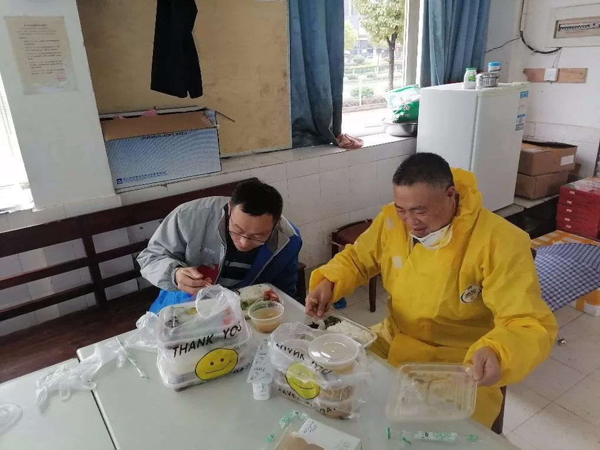

独家 | 第二批上海援鄂医疗队在重症病房的第一天：科学有序准备好持久战
原文链接 备份链接 “一百多人来自上海不同的医院，大家首先要内部磨合，我们的医护人员还要与武汉当地医护人员磨合。我们计划用3-5天来完成磨合，然后科学分配，提高工作效率。” 文 | 黄 祺 今日全国新冠肺炎确诊人数过万，武汉的重症患者还在 …

那天我在金银潭医院交完货，已经是晚上六点。我这才想起来，原来已经整整24个小时没吃饭了。路上连水都没怎么喝，也没觉得饿，人忙起来的时候感觉不到饿。
口述 | 宋 华
整理 | 王仲昀
来武汉半个多月，前天（2月14日）中午第一次比较正经地吃了午饭，是给金银潭医院送完物资之后他们安排的盒饭。我非常感动。之前因为太忙，总是随身带点干粮就对付过去了。
我叫宋华，是上海CJ荣庆物流供应链公司运营部的一名副总监。本来，今年过年是我二十多年来第一次回老家过年。没想到在老家只呆了三天，我就跟着上海总部的长途货车来到武汉。在这里，我每天跟着武汉分公司的同事一起为武汉各大医院配送物资。金银潭医院、协和医院、同济医院，我都跑了个遍。
这个春节，以及过去的半个多月，我觉得非常难忘。

宋华（右）和同事在武汉半个多月的第一顿午饭
1997年，我们公司在上海正式成立。从当年只有一辆货车，到现在全国各地都有分公司，用了23年。这23年，因为工作性质特殊，每年过年我都得在上海总部值班，没有回过山东老家。孩子在上海出生后，至今不知道老家长啥样。
腊月二十八，我终于有机会带着家人回老家过年。但是看到新冠肺炎疫情暴发的新闻，我回到家也心急如焚，想要做点什么。尤其是看到我们武汉分公司的总经理从老家返回武汉后，我也决定去往那边帮忙。武汉分公司春节期间还有几十名员工留守在那。
大年初一晚上，我从老家开车返回上海，第二天中午到达。知道总部在大年初一已有长途货车运送物资去了武汉后，我就向公司请示，希望跟着下一班货车去武汉帮忙。就这样，大年初三我接到通知后，就和另外两名司机拉着460套为上海援鄂医疗队准备的大衣出发了。大家都知道，医务人员在隔离病房工作时，不能开空调。这样到晚上就很冷，容易感冒。这批大衣就是为他们准备的。车开出上海，我们先去了趟无锡，在那里带上了南京大学校友会筹集的一批口罩。
在路上的时候，我只想这车能更快一点，越快越好。第二天下午一点，也就是大年初四，我们终于到达武汉。到了凤凰山高速口，有武汉红十字会以及当地其他一些慈善机构的工作人员在等我们。我们在那边先交接了一批物资。之后和上海援鄂医疗队相关同志联系，分别把物资给他们送到所在的医院。医疗队的同志和我们见面时，大家都非常激动，还一块合了影。

我在凤凰山高速口留影

和上海援鄂医疗队同志留影
那天我在金银潭医院交完货，已经是晚上六点。我这才想起来，原来已经整整24个小时没吃饭了。路上连水都没怎么喝，也没觉得饿，人忙起来的时候感觉不到饿。
我到武汉后，和分公司的人商量了一下。为了保护我们留守武汉的员工安全健康，我们决定，让员工留守公司，哪都不要去。我自己，和分公司总经理常军、副总经理严效文、值班负责人宋伟康以及两名驾驶员组成“应急配送小组”，承担一线配送任务。然后我也告诉了上海援鄂医疗队的联系人，我说接下来我会一直在这里，如果你们有需求，可以找我。

从1月29日早上开始，我们这个“应急配送小组”的工作就正式开始了。我们的工作，像是物资的一次中转。因为很多运输物资的大货车，没办法在武汉市区开，那么这些大货车到武汉会先开到我们公司的仓库，然后由我们的货车把物资转送到目的地。
我们配送的物资都是送给医院的，主要是社会各界捐赠或者筹集的。目前来看，这些物资多种多样，最主要的是医院这段时间需要的各种医疗器械。另外，还有各种医用口罩、打印机、药物、防护服、食物。像2月13日，我们公司自己弄了一批拌面，就给各个医院送去了。

宋华及同事在武汉与医务人员合影
一方面，我们负责把外界送来武汉的物资转到医院；另一方面，我们也尽自己所能，去帮助这些医务工作者。像上海援鄂医疗队刚来的时候，会有一些临时的需求，比如某一天突然要几台电脑和投影仪，当地医院一下子没法弄到，毕竟现在无论是网购还是实体店都不方便，那我们就帮人家想想办法。
来武汉将近20天，现在武汉的大街小巷还是看不到什么人和车。医院我们倒是跑得非常熟悉了，金银潭医院，以及协和医院和同济医院各个院区，我们几乎每天都要去。火神山、雷神山医院也都去过。印象很深的是，去火神山送物资时，外面马路上停满了和我们一样来送物资的货车，排成了两三公里长的车队，非常壮观。
除了物资，我们每天也要和医院的医生护士们打交道。之前我们武汉分公司的员工跟我说，看到我每天在最前线工作，他们也很受鼓舞，很温暖，也更有信心了。我想说，我看到医护人员时，也有同样的心情。
像我们每天从早上五六点开始运货，一直到夜里结束。有人会认为这很辛苦，但其实作为物流人，我们已经习惯了这种工作状态。而且我觉得跟医务人员相比，我们已经很轻松很幸福了。他们的热情、忘我的工作状态都给我留下很深的印象。今天金银潭医院办公室的谢主任告诉我，哪怕以后我们中午不来这边送货，只要想吃午饭就可以跟她打招呼。她说，她很敬佩这次上海过来援助的人们。
刚开始的时候，有一次我们要送医用试剂到金银潭医院。那次我穿过住院部，离确诊患者的隔离病房距离只有几米，而且还没有防护服。其实心里还是有一点害怕的。但我想这就是物流人的职责，再想想医务人员每天都要面对患者，慢慢的也就不恐惧了。
随着在武汉的日子越来越久，我们配送物资的对象也变得多了。这两天除了医院，我们还给那些在执勤的特警送了各种物资。昨夜武汉下起了中雪，我们到达其中一个执勤点是晚上九点。送完物资，对方得知我们一天没吃饭，便专门去给我们准备了晚饭。吃饭时，我们把货车车头当桌子，头上正飘着雪花。

现在是特殊时期，我做的这些事情，我不做，总有人要做。社会需要我，我就会一直坚守在自己的岗位上。疫情不结束，我不会撤退。
图片均由受访者本人提供

征集令
《新民周刊》现面向全国征集新冠肺炎采访对象和真实故事：
如果你是参与抗击新冠肺炎疫情的医护人员或其家属，我们希望聆听你的“战疫”故事，也希望传达你的诉求。
如果你是确诊、疑似患者本人或家属，我们希望了解你和家人如何“抗疫”的过程，让外界了解你的真实经历。
如果你是疫情严重地区的普通市民，我们希望展现你的乐观，并倾听你所需的帮助。
如果你是公共服务人员或各类捐助者，我们希望看到你的“最美逆行”，记录下你的无私。
……
抗击新冠肺炎疫情，我们诚征对疫情了解的社会各界人士，提供相关线索，说出你的故事，让我们用新闻留存这一切。
《新民周刊》新冠肺炎线索征集值班编辑联系方式（添加时请简要自我介绍）：
周一：应 琛 微信号：paulineying0127
周二：金 姬 微信号：gepetta
周三：黄 祺 微信号：shewen-2020
周四：周 洁 微信号：asyouasyou
周五：孔冰欣 微信号：kbx875055141
周六：吴 雪 微信号：shyshine1105
周日：姜浩峰 微信号：jianggeladandong
新闻是历史的底稿，你们是历史的见证者。期待你的故事、你的线索！

▼
大家还都在看这些
▼
转载请在评论区留言，获得授权！
转载时，须注明作者、出处和微信号


原文链接 备份链接 “一百多人来自上海不同的医院，大家首先要内部磨合，我们的医护人员还要与武汉当地医护人员磨合。我们计划用3-5天来完成磨合，然后科学分配，提高工作效率。” 文 | 黄 祺 今日全国新冠肺炎确诊人数过万，武汉的重症患者还在 …
原文链接 备份链接 ********** *****白天，肖昌文群里的400多名司机开始轮番拨打三位警官的电话，表达支援一线的想法、申请特别通行证。**********当天晚上，肖昌文终于拿到了两张“疫情防控特别通行 …
原文链接 备份链接 *************▲*************1月28日凌晨1时45分，复星从德国采购第一批5万件防护服运抵上海。作为多个学校的校友企业，复星集团的采购团队“倾巢而出”。 （受访者供图/图） 全文共4518 …
原文链接 备份链接 同力协契 共克时艰 武汉“封城”已三周，新冠肺炎全国感染人数还在持续上涨。 所有人都在期待拐点的到来，无数白衣天使依旧坚守在抗击疫情第一线，一刻不敢松懈。社会各界也在通过各种方式参与到这场没有硝烟的抗疫保卫战里。 这 …
原文链接 备份链接 张定宇常说，自己“太急了”。他的急迫感，来自于自己逐渐萎缩的运动神经元细胞，也来自于肆虐武汉城的新型冠状病毒，他想从死神手中抢夺回更多的生命。 张定宇很急。国家电视台拍摄他那天，他从门诊大厅、病房、值班室、会议 …